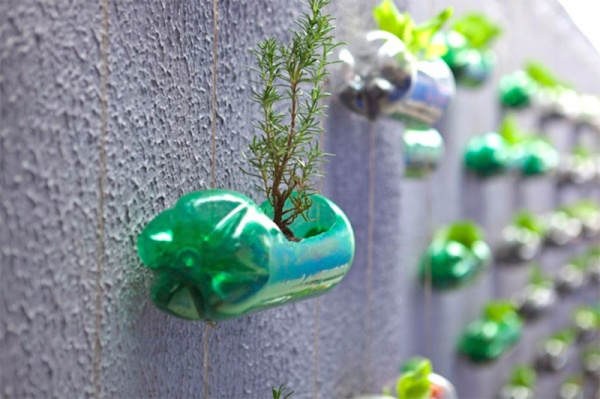
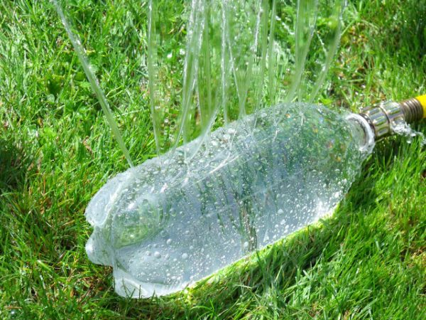
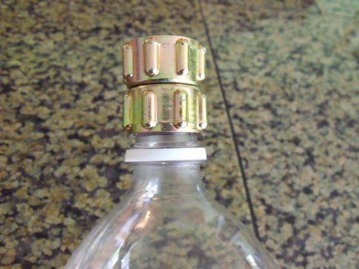
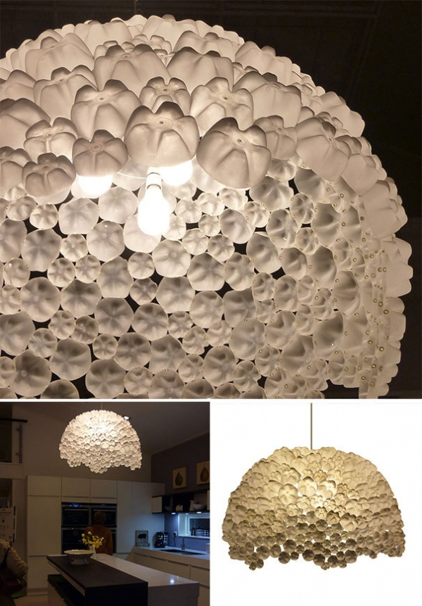
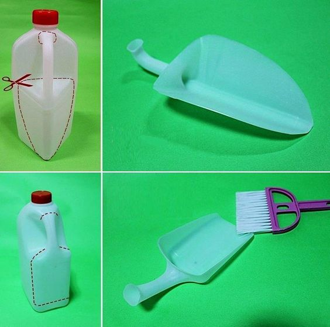
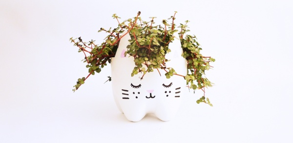
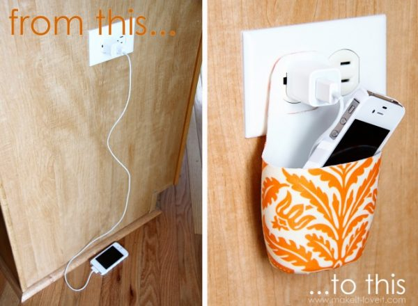
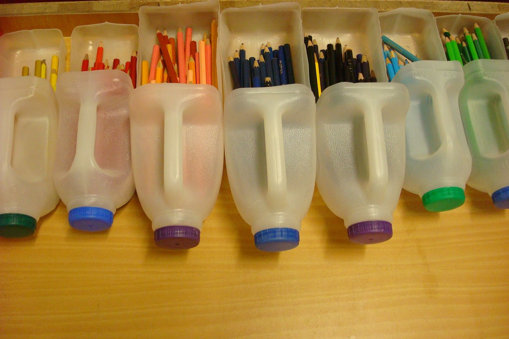
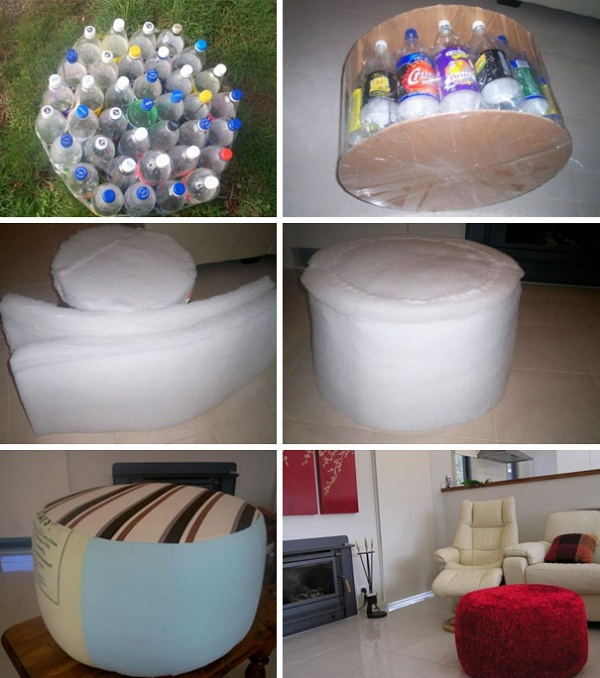
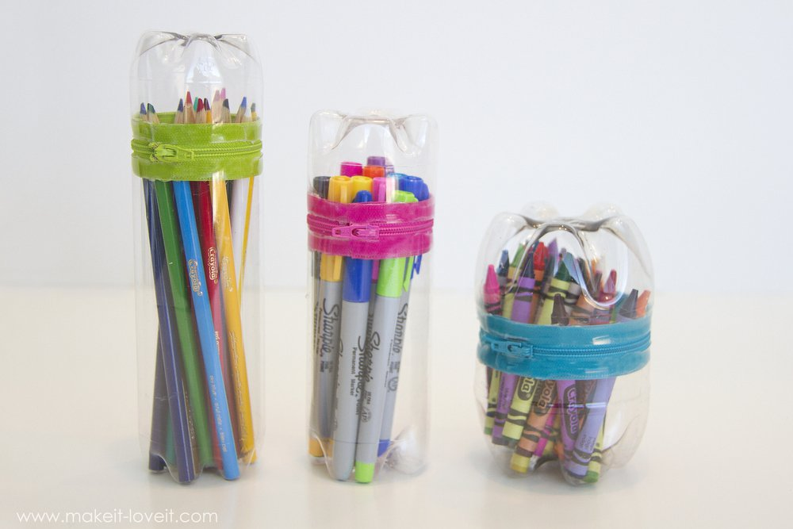

10 IDEAS PARA RECICLAR ENVASES DE PLÁSTICO
Prácticamente, todo lo que consumimos viene en un envase de plástico y ya conocemos el impacto ambiental que conlleva desecharlos sin darles otro uso. Les dejamos 10 ideas muy tentadoras para que no haya excusa para no reutilizar sus envases. ¡Manos a la obra!
1. INVERNADERO VERTICAL
Si les tienta la idea de tener una huerta propia, empezar por un invernadero vertical con botellas es una buena opción. Todo lo que hay que hacer es una cavidad en una de las caras de envase de plástico, y darle el mismo tratamiento que a cualquier maceta. No olvidar realizar los agujeros en la base para que drene la planta y no se pudra. Podemos colgarlos con tanza o hilo sisal, en ambos extremos, dejando una distancia de 50 cm entre botella y botella.
2. ROCIADOR
Una gran idea para regar el jardín: un rociador “automático”. Para confeccionarlo vamos a necesitar una botella de plástico de 2 litros y un adaptador para mangueras (muy fácil de conseguir en ferreterías o supermercados). Primero tenemos que colocar el adaptador en el pico de la botella.
 4. LÁMPARA IRREGULAR
La idea de esta lámpara es armar un domo o semicírculo que sirva de campana (o pantalla) para la luz. La cantidad de botellas que vamos a utilizar depende del tamaño final que queramos darle, pero para una lámpara mediana se necesitan alrededor de 70 bases de botella. Las podemos pintar y decorar como deseemos y unirlas entre sí con un poco de cemento de contacto. Para darle un toque más decorativo, se puede armar de manera irregular como en la foto.
5. PALITA
Esta es una idea muy original que puede sacarnos de un apuro y a la que podemos darle varios usos: para la basura, para jardinería, e incluso para lxs chicxs en la playa. Lo que vamos a necesitar es un bidón o cualquier envase de plástico que tenga asa, y lo vamos a cortar así:
6. MACETAS
Estas macetas son preciosas para decorar o para regalar. Son ideales para armar con botellas de gaseosa, por la particular forma de su base. Para hacerlas necesitamos cortar las botellas unos centímetros por debajo de la mitad (en una botella grande) y trabajar sobre una de las caras.
7. PORTA CELULAR
Una idea excelente para combatir los enchufes incómodos o lejanos cuando necesitamos cargar nuestro celular. Para realizarlo vamos a necesitar un envase preferentemente plano, como el de la famosa colonia para bebés, y seguir estos pasos:
8. ORGANIZADOR
Esta idea es muy útil para ordenar un escritorio, un cuarto de niñxs, e incluso para un negocio. Todo lo que vamos a necesitar es un envase que tenga asa.
9. PUFF
Para hacer este puff necesitaremos dos bases de cartón resistente, botellas de plástico con su tapa, guata y tela para revestir. El procedimiento es el siguiente:
10. CARTUCHERA
Para esta idea genial necesitamos dos botellas. Dependiendo cómo las cortemos y unamos, podremos obtener cartucheras más grandes o más pequeñas según el uso que les vayamos a dar. El procedimiento es muy sencillo, sólo tenemos que unir ambas partes con un cierre del color que más nos guste y listo! Esperamos que disfruten de estas ideas, que las adapten a sus comodidades y que reciclar se vuelva un hábito.